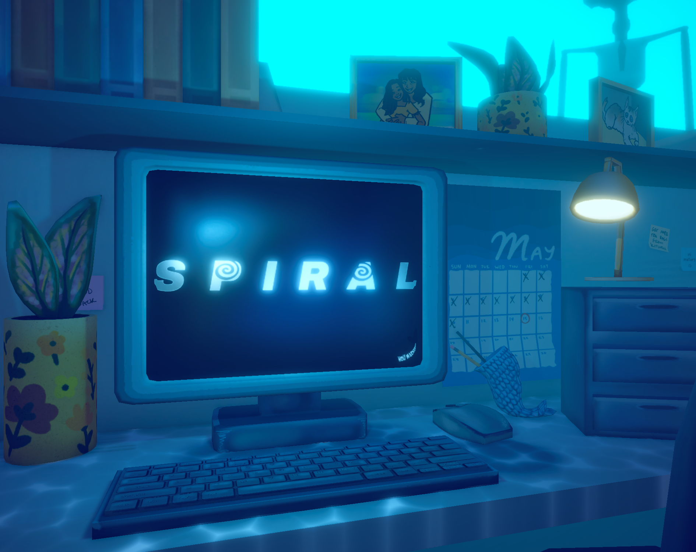

Spiral (Working Title), In Development
Unity, Lead Programmer, Level Designer

What Is This?
A part point and click puzzle game, part first person horror game all about managing one's anxiety and the dangers of overwork and losing sight of your priorities. This game is being developed as part of my Senior Capstone. We are currently working towards having a beta build by December of this year, and plan on releasing the game on Steam at the end of its development, in mid-late Spring 2027.
You can find this game's alpha build on itch.io here.
What Is My Part?
I am the lead programmer and level designer in a team of 5, currently working with 1 other programmer.
The Challenges
Initially we had a team of 5, with another programmer. Unfortunately, our other programmer had issues arise and so our producer had to step into a programming role for 6 months of development (recently we have gotten a new programmer on our team). Additionally, our writer is in charge of coming up with the content for the various word puzzles the player must complete, however he is not comfortable working in a game engine, especially fine-tuning the various UI elements that the puzzles entail.
The Results
Vertical Slice
As of writing, Spiral is still in development, but, there has already been a lot of work put into the game. In the span of approximately 6 weeks, we were able to take Spiral from concept, to a fleshed out vertical slice, this showed off the game loop, the unique aspects of the game, as well as how the story would be delivered to the player. In these 6 weeks I was largely in charge of the design and code surrounding the primary puzzles the player must solve, as well as entirely in charge of the background system mechanics, enemy AI, level transitions, player controls, and more. In additions to these aspects of gameplay, I also created a tool to aid in the play testing of our level design, a simple script that saves and later displays a tester's path as they try to solve a maze in our game. This tool allowed for us to easily see where players are getting lost in the level, and better diagnose possible solutions.
Summer work
Additionally, in the 3 months following the vertical slice, during which development was largely paused for the summer, I worked on refactoring the code base of the game, fixing many bugs and exploits, and implementing a number of developer tools. These tools included not only a tool set for debugging the game, with various dev tools that could be accessed with the click of a button, but also a series of tools for creating content for the various puzzle types in the game. These puzzle creation tools were intended to allow our writer, who is unfamiliar with much of the flow of Unity's prefab and UI systems, a way to easily create more puzzles based off of his writing and following simple prompts for entering the information. From that entered information the tools would automatically construct the text given into a new, working, challenge for the players to deal with.
Alpha
For the alpha version of the game, I spent most of my programming time on expanding how the player interacts with the world, and how the world interacts with the player. One of the big mechanics I worked on was the addition of coworkers, NPC's who will occasionally come up to the player and begin talking with them, distracting the player from the work they need to get done. To implement this mechanic, I created a generalized system that allowed a script to subscribe to be alerted when the day's timer hit a certain time, and when that occurred to allow that script to spawn an object or activate a behavior relating to a ScriptableObject that implemented the necessary interface, the time I spent creating this system paid off, as it was later used in 3 other systems throughout the game. Additionally, to really sell that a coworker was pulling the main character's attention away from their work, I modified the main camera's movement to passively drag the player's view over towards the coworker. This is not to an extent that it's impossible to do work on the tasks, but it is intended to add an extra bit of distraction, incentivizing the player to tell the coworker to go away. However, doing such a thing, in accordance with the themes of the game, will negatively influence the variables behind the scene that determine the ending the player will get.
The other big project I headed during the alpha's development was changing the game's computer interface from being a screen space UI to being world space. As a team we had been implementing a number of mechanics that made changes to the world around the player, however, playtests showed that there was no incentive for the player to not be on their computer, which at the time was a UI that took up the entirety of the player's screen. Because of this, we decided the best route forward was to change the UI to be fixed at a point in the world. This change was a large undertaking, as it involved a core change to the systems that were responsible for > 80% of the way that the player interacted with the game. However, due to the work I put in, we were able to achieve this massive rework in ~10 hours, and have it be in a bug free state by the end of the one week sprint.
On top of all this, there were a number of other changes I made on our alpha, including reworking how tasks are given to the player, adding the code for 2 new kinds of tasks (as well as fully reworking another), allowing the player to stand up from their desk, bug fixing the code of the other programmers, and much more.
More information regarding Spiral will be added here as development continues.